P.S. Решала я эти задачи теми способами, которыми умела на тот момент(исходя из той теории, что нам давали), сейчас же, обладая навыками получше, я бы решила их иначе. Прошу не судить строго, этот сайт создан с 0 за одну ночь(задачи не были решены в эту ночь(28.10.24-29.10.24), даты решения указаны под каждой задачей).
# Задание 1. 05.02.24
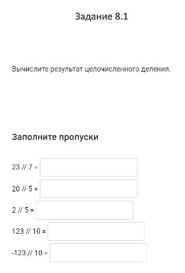
# Заполнение пропусков (8.1)
f = 23 // 7
# Целочисленное (деление без остатка)
g = 20 // 5
r = 2 // 5
n = 123 // 10
h = -123 // 10
print(f, g, r, n, h, sep='n')
# Выведет 3 4 0 12 -13, каждое число с новой строки
# Задание 1. 05.02.24
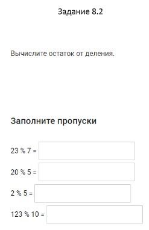
# Заполнение пропусков (8.2)
f = 23 % 7
# Остаток от деления
g = 20 % 5
r = 2 % 5
n = 123 % 10
print(f, g, r, n, sep='n')
# Выведет 2 0 2 3, каждое число с новой строки
# Задание 1. 05.02.24
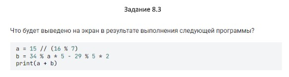
# Вывод на экран (8.3)
f = 15 // (16 % 7)
g = 34 % f * 5 -29 % 5 * 2
print(f + g)
# Выведет 29
# Задание 1. 05.02.24
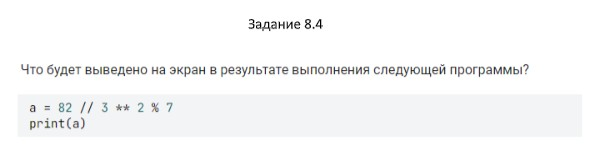
# Вывод на экран (8.4)
f = 82 // 3 ** 2 % 7
print(f)
# Выведет 2
# Задание 2. 12.02.24
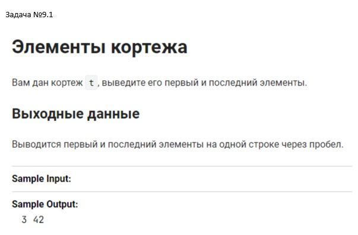
# Вывод на экран (9.1)
t = [3, 42];
print(t[0], t[1])
# Индекс первого и последнего элемента кортежа
# Выведет 3 42
# Задание 2. 12.02.24
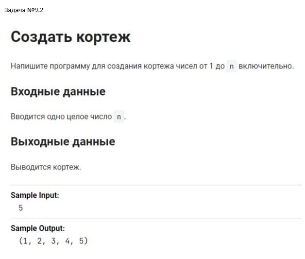
# Создание кортежа (9.2)
n = int(input())
print(tuple(range(1, n + 1)))
# Если ввести 5 выведет (1, 2, 3, 4, 5)
# Задание 2. 12.02.24
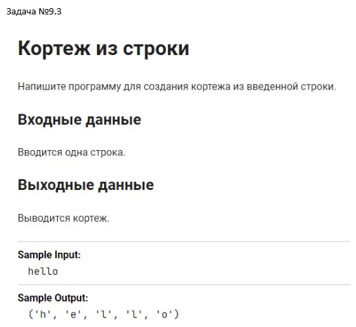
# Создание кортежа из строки (9.3)
string = str(input())
tup = tuple(string)
print(tup)
# Если ввести hello выведет ('h', 'e', 'l', 'l', 'o')
# Задание 2. 12.02.24
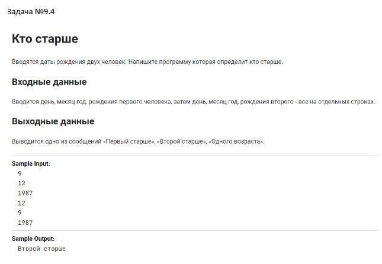
# Создание кортежа (9.4)
day = int(input())
month = int(input())
year = int(input())
day1 = int(input())
month1 = int(input())
year1 = int(input())
if year > year1:
print("Первый человек старше второго человека.")
elif year1 > year:
print("Второй человек старше первого человека.")
elif year == year1:
if month > month1:
print("Первый человек старше второго человека.")
elif month1 > month:
print("Второй человек старше первого человека.")
elif month == month1:
if day > day1:
print("Первый человек старше второго человека.")
elif day1 > day:
print("Второй человек старше первого человека.")
else:
print("Эти люди родились в один и тот же день.")
# Задание 3. 12.02.24
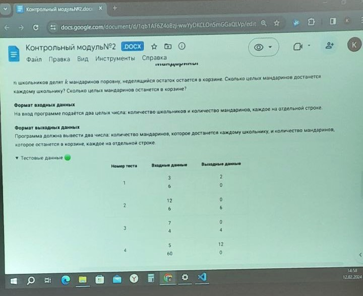
# Задача (модуль 2)
shk = int(input())
m = int(input())
kmsh = m // shk
km = m - kmsh * shk
print (kmsh, km, sep='n')
# Выведет кол-во мандаринов на 1 школьника, а затем кол-во оставшихся мандаринов в корзине.
# Задание 4. 19.02.24
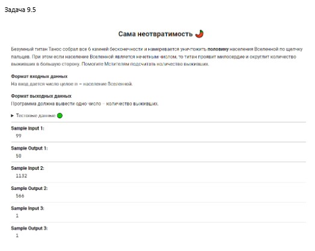
# Задача (9.5)
n = int(input())
if n % 2 == 0:
n = n // 2
print(n)
elif n % 2 != 0:
n = n / 2
print(round(n))
# Выведет кол-во выживших.
# Задание 4. 19.02.24
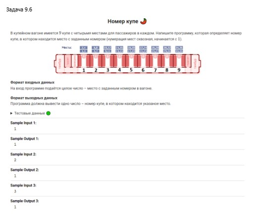
# Задача (9.6)
x = int(input())
num = {1, 2, 3, 4};
num1 = {5, 6, 7, 8};
num2 = {9, 10, 11, 12};
num3 = {13, 14, 15, 16};
num4 = {17, 18, 19, 20};
num5 = {21, 22, 23, 24};
num6 = {25, 26, 27, 28};
num7 = {29, 30, 31, 32};
num8 = {33, 34, 35, 36};
if x in num:
print(1)
elif x in num1:
print(2)
elif x in num2:
print(3)
elif x in num3:
print(4)
elif x in num4:
print(5)
elif x in num5:
print(6)
elif x in num6:
print(7)
elif x in num7:
print(8)
elif x in num8:
print(9)
else:
print('Ошибка в написании места')
# Выведет номер купе, по номеру места.
# Задание 4. 19.02.24
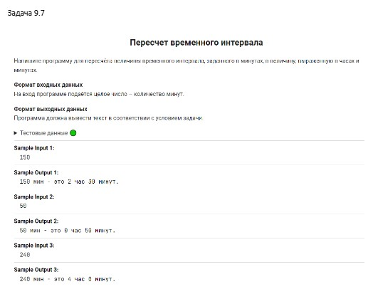
# Задача (9.7)
x = int(input())
chas = x // 60
minut = x % 60
print(f"{x} мин - это {chas} час {minut} минут.")
# Выводит кол-во часов и минут.
# Задание 4. 19.02.24
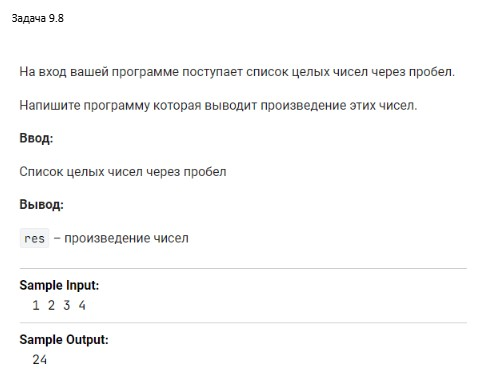
# Задача (9.8)
res = 1
for num in map(int, input().split()):
if num != 0:
res *= num
elif num == 0:
print('Умножение 0, на любое количество, равно 0 и наоборот')
print(res)
# Произведение чисел, находящихся рядом, записанных через пробел.
# Задание 4. 19.02.24
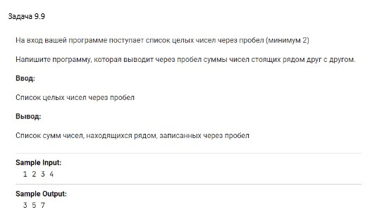
Задача (9.9)
a=[int(i)for i in input().split()]
print(*[a[i]+a[i+1] for i in range(len(a)-1)])
# Список сумм чисел, находящихся рядом, записанных через пробел.
# Задание 4. 19.02.24
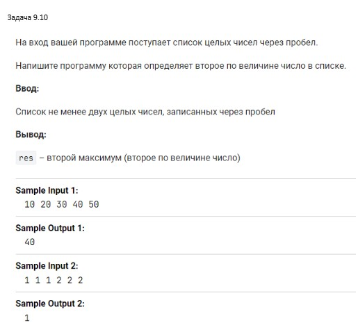
# Задача (9.10)
s = list(map(int, input().split()))
s.sort()
print(s[1])
# Второе по величине число, среди не отсортированного списка чисел, введённого пользователем, находящихся рядом, записанных через пробел.
# Задание 4. 19.02.24
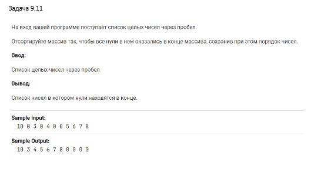
# Задача (9.11)
s = [int(i) for i in input().split(' ')]
# Преобразование списка чисел через пробел, от пользователя, в список, в квадратных скобках, через запятую.
s0 = s.count(0)
# Подсчет количества 0 в списке от пользователя.
s01 = s0 * [0]
# Нули в формате списка, в квадратных скобках, через запятую.
s01 = (" ".join(map(str, s01)))
# Нули в формате строки цифр, без скобок и запятых, через пробел (для добавления в конец).
s = list(filter(lambda x: x!= 0, s))
# Список чисел, введённый пользователем, без нулей, в той же последовательности, что изначально, в квадратных скобках, через запятую.
s.append(s01)
# Добавление нулей в конец списка, введённого пользователем (отсортированного так, чтобы нулей не было в записи), без изменений последовательности чисел, в квадратных скобках, через запятую.
s = (" ".join(map(str, s)))
# Map применит функцию str к каждому элементу списка, тем самым str преобразует элементы в строки, а метод join объединит эти строки в одну.
print(s)
# Список целых чисел, введённых пользователем, без скобок и запятых, через пробел, в котором все нули перемещены в конец.
# Задание 4. 19.02.24
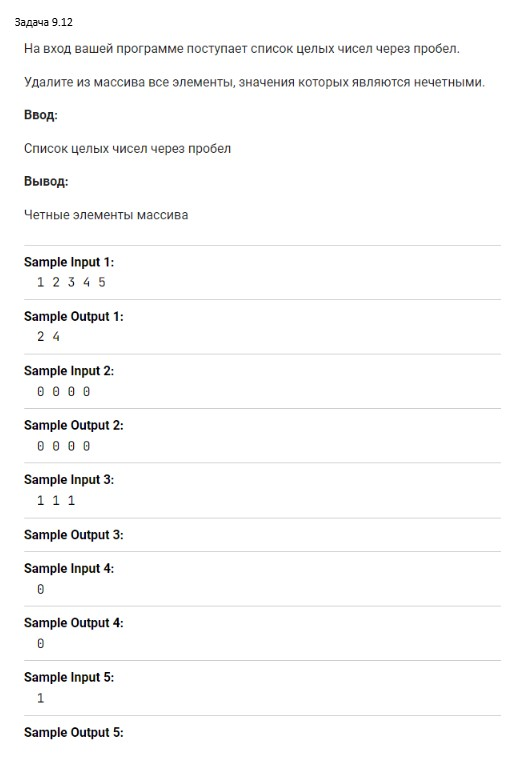
# Задача (9.12)
s = input()
a = [int(s) for s in s.split()]
for i in a:
if int(i)%2 == 0:
print(i, end=' ')
# Выводит только четные элементы массива.
# Задание 5. 8.04.24
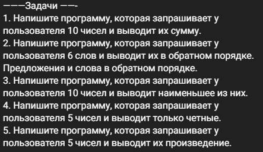
# 1.
s = 0
# Присваиваем значение переменной.
for i in range(10):
# Запрашиваем у пользователя 10 чисел.
k = int(input())
# Ввод чисел.
s += k
# К значению переменной s, с каждым новым повторением цикла for, прибавляется число, введённое пользователем.
print(s)
# Запрашивает у пользователя 10 чисел и выводит их сумму.
# 2.
words = []
# Создаем пустой список для хранения слов.
for i in range(6):
# Запрашиваем у пользователя 6 слов и добавляем их в список.
word = input("Введите слово: ")
words.append(word)
words.reverse()
# Обращаем список в обратном порядке.
for word in words:
print(word)
# Выводим список предложений и слов в обратном порядке, на экран.
# 3.
b = []
# Создаем пустой список b.
for i in range(10):
# Запрашиваем у пользователя ввести 10 чисел.
a = int(input())
# Ввод чисел.
b.append(a)
# Поочерёдно добавляем элементы(числа) в конец списка b.
c = min(b)
# Из получившегося списка находим минимальное значение.
print(c)
# Выводит наименьшее из чисел, введённых пользователем.
# 4.
a = []
# Создаем пустой список а.
for i in range(5):
# Запрашиваем у пользователя 5 чисел.
b = int(input())
# Ввод чисел.
a.append(b)
# Поочерёдно добавляем элементы(числа) в конец списка а.
for b in a:
# После добавления числа в список а проверяем его.
if b % 2 == 0:
# Проверка будет на чётность числа.
print(b)
# Выводит только чётные числа, из 5, введённых пользователем.
# 5.
a = []
# Создаем пустой список а.
for i in range(5):
# Запрашиваем у пользователя 5 чисел.
b = int(input())
# Ввод чисел.
a.append(b)
# Поочерёдно добавляем b элементы(числа) в конец списка а.
count = 1
# Присваиваем количеству найденных вхождений переменной единицу.
for b in a:
count *= b
# Присваиваем значение переменной count, равное: количество вхождений, умноженное на число (введённое пользователем).
print(count)
# Выводит произведение 5 чисел.
# Задание 6. 8.04.24
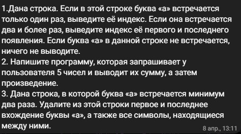
# 1.
s = input("Введите строку: ")
# Запрашиваем предложение от пользователя.
index_first = s.find('а')
# Начальная точка отсчета.
index_last = s.rfind('а')
# Конечная точка отсчета.
if index_first == index_last and index_first != -1:
# Проверка на совпадение первого и последнего индекса.
print(f"Буква 'а' встречается один раз, индекс: {index_first}")
# Если они равны: Вывести на экран значение первого индекса.
elif index_first != -1:
print(f"Буква 'а' встречается два и более раз, индексы: {index_first}, {index_last}")
# Вывод первого и последнего индекса.
elif index_first == -1:
print("Буква 'а' не встречается")
# Нет индексов.
# 2.
numbers = [ ]
# Создаем пустой список а.
for i in range(5):
# Запрашиваем у пользователя 5 чисел.
number = float(input("Введите число: "))
# Пользователь вводит целое число или с плавающей точкой (5 раз).
numbers.append(number)
# Поочерёдно добавляем элементы(числа) в конец списка numbers.
total_sum = sum(numbers)
# Суммируем все введённые пользователем числа с помощью sum.
print("Сумма введенных чисел:", total_sum)
# Выводим на экран сумму пяти чисел между собой.
product = 1
# Присваиваем значение переменной product.
for number in numbers:
product *= number
# Умножаем введённое пользователем число на следующее введённое число.
print("Произведение введенных чисел:", product)
# Произведение пяти чисел между собой.
# 3.
s = input("Введите строку: ")
# Строка, в которой буква «а» встречается минимум два раза.
first_index = s.find('а')
# Определение первого 'a'.
last_index = s.rfind('а')
# Определение последнего 'a'.
result = s[:first_index] + s[last_index+1:]
# Удаление из строки первого и последнего вхождения буквы 'а', а также всех символов, находящиеся между ними.
print("Результат:", result)
# Результат после удаления (по условию) символов строки.